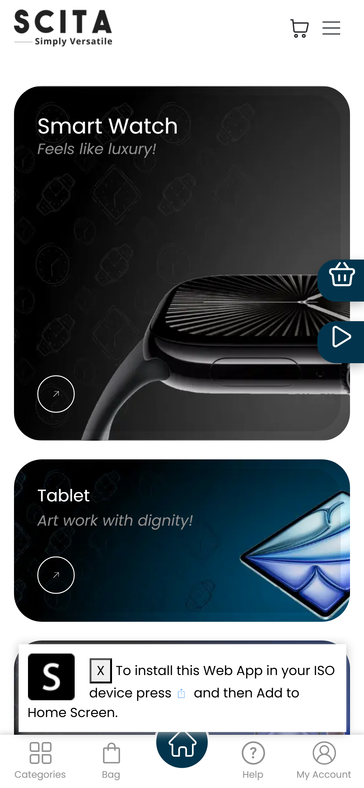

Scita's built-in PWA support gives users a lightning-fast, frictionless, and intuitive experience on their mobile devices and computers.

Define app icons, names, and colors. All from Odoo. Zero coding.
Users can access key pages (such as Orders and Wishlist) directly from their mobile home screen, just like a native app.